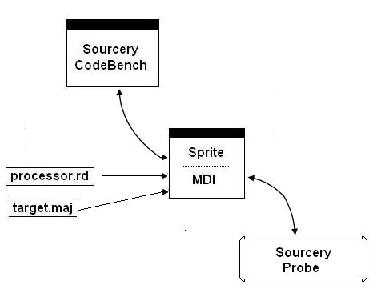

Figure 3‑1 shows the configuration process when using the debugger to connect to a Sourcery Probe.
Figure 3‑1. Configuration Process
Table 3‑1 describes the configuration files used in the initialization process.
Table 3‑1. Debugger Configuration Files
|
processor.rd |
The register definition file for the selected processor is automatically read on startup. You may also specify other .rd files for custom hardware on your system. (See Register Definition File.) |
|
target.maj |
This is a custom target initialization file for managing the details particular to your target board. In some cases, additional script files may be called for more sophisticated initialization scenarios. |